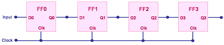

Shift Registers
A register is a
semiconductor device that is used for storing several bits of digital
data. It basically consists of a set of
flip-flops, with each flip-flop
representing one bit of the register. Thus, an n-bit register has n
flip-flops. A basic register is also known as a
'latch.'
A special type
of register, known as the
shift register,
is used to pass or transfer bits of data from one flip-flop to another.
This process of transferring data bits from one flip-flop to the next is
known as
'shifting'.
Shift registers
are useful for transferring data in a serial manner while allowing
parallel access to the data.
A shift
register is simply a set of flip-flops interconnected in such a way that
the input to a flip-flop is the output of the one before it.
Clocking all the flip-flops at the same time will cause the bits of data
to shift or move to the right in one direction (i.e., toward
the last flip-flop) . Figure 1 shows a simple implementation of a 4-bit shift register using D-type
flip-flops.

Figure 1.
A Simple Shift Register Consisting of D-type Flip-flops
Under its basic
operation, the data bit of the last flip-flop is
lost
once it is clocked out. In some applications there is a need to
bring this back to the first flip-flop, in which case the data will just
be circulated within the shift register. A shift register connected
this way is known as an
end-around-carry
shift register, or simply
'ring counter'.
A more
complicated version of a shift register is one that allows shifting in
both
directions, left or right. It is aptly and quite descriptively
referred to as the
Shift-Right
Shift-Left Register.
To accomplish this, a
'Mode'
control line is added to the circuit. The state of this 'Mode' input
determines whether the shift direction would be right or left.
See also:
Flip-flops;
Counters;
What is a
Semiconductor?
HOME
Copyright
©
2005
www.EESemi.com.
All Rights Reserved.